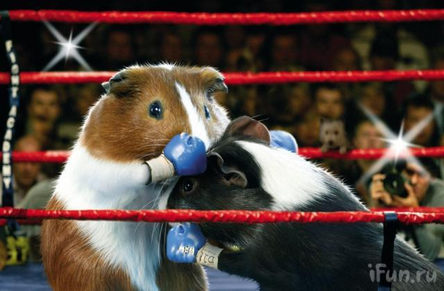

👀Esto No Es Una Pagina De Cuyos👀
El cuyo (cobayo, curí, conejillo de indias, cuy) es un mamífero roedor originario de la zona andina de Bolivia, Colombia, Ecuador y Perú. Las pruebas existentes demuestran que el cuyo fue domesticado hace 2 500 a 3 600 años. Este pequeño mamífero fue llevado a Europa por los españoles en el siglo XVI, llamándolo conejillo de indias, en Holanda e Inglaterra, se popularizaron como mascotas de las clases altas, por ser criaturas extrañas; por su forma alargada, carencia de cola, y los ruidos que emitían, de ahí los llamaron cerditos de Guinea (guinea pigs), pues las embarcaciones que llegaban a estos países hacían escala en Guinea, creyendo la mayoría de las personas que provenían de este país.

Esto No Es Una Lista De Nombres Para Cuyos
-
Botitas
-
Ramos
-
Panfilo
-
Cafe
-
Timmy